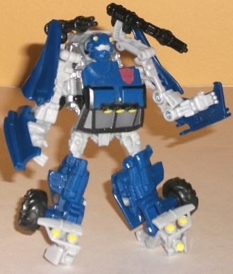
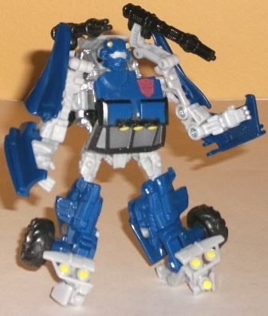
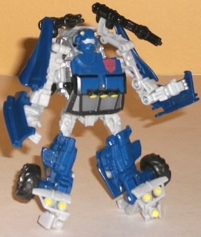

Allegiance : Autobot
Size : Scout
Difficulty of Transformation : Easy
Color Scheme : Dark blue, light milky gray, black, and some silver and pale light yellow
Individual Rating : 7.7
 Road
Rival Showdown (Wal-Mart Exclusive)
Road
Rival Showdown (Wal-Mart Exclusive)
Price
: $16 U.S.
Overall Rating:
8.1
(NOTE: Because this set is composed of repaints,
this is not a full-blown review. This mainly covers any changes made to
the set and the color scheme, and merely compares it to the original versions
of these molds. For a review on RotF Dune Runner, the mold used for Beachcomber,
go
here
. For a review on RotF Dirt Boss,
the mold used for Deadlift, go
here
.)
 Beachcomber
Beachcomber

Allegiance
: Autobot
Size
: Scout
Difficulty of Transformation
: Easy
Color Scheme
: Dark blue, light milky
gray, black, and some silver and pale light yellow
Individual Rating
: 7.7
Beachcomber is, appropriately,
a repaint homage to the G1 character of the same name, and like G1 Beachcomber,
this version is a dune buggy. Granted, this version is a more weaponed,
military version of the buggy, but it still works quite well for Beachcomber.
The dark blue is a great color and contrasts well with the light milky
gray. That said I really wish they'd move away from this incredibly dull
shade of light gray and towards something that looked a bit more metallic.
The black serves as another nice dark contrast color against the gray,
and for detailing, the silver is an excellent shade of the color, being
a smidge darker than your usual metallic silver but a bit lighter than
gunmetal gray. It and the light yellow coloration used for the headlights
both go very well with this homage color scheme. That said, Beachcomber
does seem to suffer from a few fewer paint apps than you'd think he'd have--
some important stuff like his taillights aren't painted, for example.
No mold changes have
been made to RotF Beachcomber.
Deadlift
Allegiance
: Decepticon
Size
: Scout
Difficulty of Transformation
: Easy
Color Scheme
: Moderately dark gray,
orange, metallic gunmetal gray, and some pale off-white, red, and chalky
periwinkle
Individual Rating
: 8.4
Deadlift here is also
a repaint homage, but not to a Transformer-- instead, he's a nod to the
Go-Bot Spoons! Besides having the same general color scheme, he also has
the same "MR-34" markings on the sides of his vehicle mode, confirming
the homage. It's a pretty cool throwback, but ignoring that, the color
scheme is still fairly decent. Orange is a much more appropriate color
for a forklift than Dirt Boss' light green, and the gray used as the other
main color is a nice, dark shade, not overly milky or dull like Beachcomber's
gray. The white paint apps on the vehicle mode and the robot chest serve
as great contrasts against both of the main colors, and the periwinkle
used for his chest, while an admittedly out-there choice, oddly fits. The
metallic gunmetal gray painted all over Deadlift's lower arms and legs
is also a great, attractive shade of the color, and fits in well with the
dark gray. Granted, overall it's not the most exciting color scheme, but
it's definitely more fitting for a forklift than Dirt Boss' coloration
and has better paint apps and secondary colors.
No mold changes have
been made to Deadlift.
Taken together, the Road Rival Showdown set is an easy recommendation. Both figures are at least average scout molds, and in superior colors than their original iterations. Since their retail price is the exact same as if you'd have bought they seperately (or cheaper, if you can find them on clearance), there isn't much not to recommend if you're into A. scouts, B. the movie aesthetic, and B. repaint homages. Definitely one of the more attractive store exclusive sets out there.
Review by Beastbot